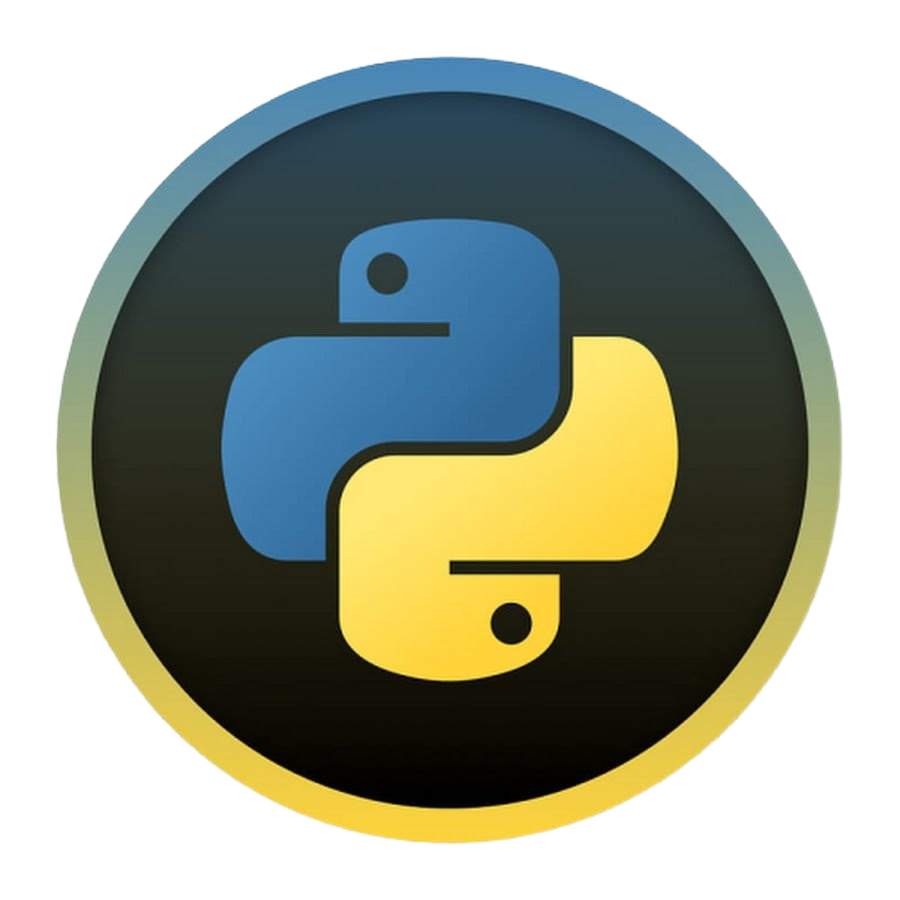

История Python
.png)
В конце 1980-х годов сотрудником голландского национального института математики и информатики GWI Гвидо ван Россумом (Guido van Rossum) была предложена идея создания нового языка программирования...
В то время Гвидо участвовал в разработке учебного языка ABC, как базы для изучения программирования. Проект ABC в итоге не увенчался успехом и Гвидо перешел к программированию в другие проекты, где ключевой темой была операционная система Amoeba (объединяющая компьютеры в сети и дающая пользователям иллюзию взаимодействия с единой системой).
Из интервью Гвидо ван Россума:
«Я не знаю, насколько хорошо люди знают влияние ABC на Python. Я стараюсь упомянуть влияние ABC, потому что я обязан всему, чему я научился во время этого проекта, и людям, которые над ним работали. Дизайн ABC был очень легким и чётким. ABC задумывался как язык программирования, которому можно было обучить продвинутых пользователей компьютеров, которые не были программистами или разработчиками программного обеспечения.
Авторы ABC начали разрабатывать язык в конце 70-х - начале 80-х годов. Я присоединился к команде в 1983 году. Думаю, мы работали до 1986 или 1987 года. По разным причинам проект ABC не имел большого успеха. В 1986 году я перешел в другой проект в CWI, проект Amoeba.
К концу 1980-х мы обнаружили, что нам нужен язык сценариев. В этом проекте у меня была большая степень свободы, чтобы начать свой собственный мини-проект в рамках того, что мы делали. Я вспомнил весь свой опыт и некоторые разочарования в ABC. Я решил попробовать создать простой язык сценариев, который обладал бы некоторыми из лучших свойств ABC, но без проблем.
Итак, я начал печатать. Я создал простую виртуальную машину, простой парсер и простую среду выполнения. Я сделал свою собственную версию различных частей ABC, которые мне понравились. Я создал базовый синтаксис, использовал отступы для группировки операторов вместо фигурных скобок или блоков начала-конца и разработал небольшое количество мощных типов данных: словарь, список, строки и числа.
Я взял ингредиенты ABC и немного их перемешал. Python во многом был похож на ABC, но были и отличия. Списки, словари, базовые операторы Python и использование отступов отличались от того, что было у ABC. ABC использовала заглавные буквы для ключевых слов. В Python ключевые слова были строчными. Я думаю, что моим самым инновационным вкладом в успех Python было облегчение его расширения.»
С самого начала язык проектировался как объектно-ориентированный. Гвидо ван Россум назвал язык в честь популярного британского комедийного телешоу 1970-х «Monty Python’s Flying Circus», поскольку автор был поклонником этого телешоу, как и многие другие разработчики того времени, а в самом шоу прослеживалась некая параллель с миром компьютерной техники.
В феврале 1991 года Гвидо опубликовал в группе новостей исходный текст Python версии 0.9.0. В этом начальном релизе были модули, заимствованные из Modula-3. Ван Россум описывал модуль как «один из главных элементов в программировании на Python».
Python 1.0 появился в январе 1994 года. Последней версией, выпущенной Ван Россумом во время работы в центре математики и информатики (CWI), был Python 1.2.
С 1995 года Гвидо Ван Россум продолжил работу над Python-ом в корпорации национальных исследовательских инициатив (CNRI) в городе Рестон, штат Вирджиния, где было выпущено несколько версий языка. С тех пор Python стал очень популярен среди разработчиков, которых привлекает его чистый синтаксис и репутация продуктивности.
Популярные IDE Python
IDLE Python

IDLE — редактор, поставляемый вместе с Python. Это базовый, упрощенный режим программирования на Python. Тем не менее, IDLE хороший редактор для начала программирования и понимания основ языка. В нем есть оболочка Python — интерактивный интерпретатор. Его возможности обширны: автозавершение кода, подсветка синтаксиса, подбор отступа и базовый встроенный отладчик.
Плюсы:
Легкий.
Подходит для начинающих.
Минусы:
Не подходит сложным проектам.
Не хватает продвинутых функций.
Sublime text

Sublime Text — свободное программное обеспечение с широкой поддержкой сообщества. Редактор работает с несколькими языками программирования. В большинстве случаев можно использовать незарегистрированный Sublime Text, но время от времени вы будете получать всплывающее окно с просьбой зарегистрировать продукт и приобрести лицензию. Sublime Text тонко настраивается и дополняется пакетами для отладки, автозавершения кода, линтинга и т.д.
Плюсы:
Простой и по большей части бесплатный.
Тонко настраивается.
Компактный и эффективный.
Минусы:
Для удобства требует дополнительных пакетов.
Visual Studio Code

Visual Studio Code — бесплатный редактор кода от Microsoft для Windows, Linux и MacOS. Его возможности — отладка, подсветка синтаксиса, интеллектуальное завершение кода, предопределённые фрагменты кода, рефакторинг и интеграция с Git. Поддерживаются различные языки программирования. Для начала работы с Python может понадобиться несколько дополнительных пакетов, но установить их довольно просто. Редактор постоянно обновляется. Visual Studio Code — один из лучших редакторов не только для Python, но и для других языков программирования. Я часто пользуюсь VSC и очень рекомендую его.
Плюсы:
Это фантастическая платформа с непрерывными обновлениями.
Потребляет немного памяти по сравнению с другими громоздкими инструментами разработки.
Имеет встроенный терминал и прост в использовании.
Минусы:
Иногда терминал работает не так, как хотелось бы.
Базовый синтаксис Python

Основные свойства
Python не требует явного объявления переменных, является регистро-зависим (переменная var не эквивалентна переменной Var или VAR — это три разные переменные) объектно-ориентированным языком.
Синтаксис
Во первых стоит отметить интересную особенность Python. Он не содержит операторных скобок (begin..end в pascal или {..}в Си), вместо этого блоки выделяются отступами: пробелами или табуляцией, а вход в блок из операторов осуществляется двоеточием. Однострочные комментарии начинаются со знака фунта «#», многострочные — начинаются и заканчиваются тремя двойными кавычками «"""».
Чтобы присвоить значение пременной используется знак «=», а для сравнения —
«==». Для увеличения значения переменной, или добавления к строке используется оператор «+=», а для уменьшения — «-=». Все эти операции могут взаимодействовать с большинством типов, в том числе со строками. Например
Структуры данных
Python содержит такие структуры данных как списки (lists), кортежи (tuples) и словари (dictionaries). Списки — похожи на одномерные массивы (но вы можете использовать Список включающий списки — многомерный массив), кортежи — неизменяемые списки, словари — тоже списки, но индексы могут быть любого типа, а не только числовыми. "Массивы" в Python могут содержать данные любого типа, то есть в одном массиве может могут находиться числовые, строковые и другие типы данных. Массивы начинаются с индекса 0, а последний элемент можно получить по индексу -1 Вы можете присваивать переменным функции и использовать их соответственно.
Вы можете использовать часть массива, задавая первый и последний индекс через двоеточие «:». В таком случае вы получите часть массива, от первого индекса до второго не включительно. Если не указан первый элемент, то отсчет начинается с начала массива, а если не указан последний — то масив считывается до последнего элемента. Отрицательные значения определяют положение элемента с конца. Например:
Строки
Строки в Python обособляются кавычками двойными «"» или одинарными «'». Внутри двойных ковычек могут присутствовать одинарные или наоборот. К примеру строка «Он сказал 'привет'!» будет выведена на экран как «Он сказал 'привет'!». Если нужно использовать строку из несколько строчек, то эту строку надо начинать и заканчивать тремя двойными кавычками «"""». Вы можете подставить в шаблон строки элементы из кортежа или словаря. Знак процента «%» между строкой и кортежем, заменяет в строке символы «%s» на элемент кортежа. Словари позволяют вставлять в строку элемент под заданным индексом. Для этого надо использовать в строке конструкцию «%(индекс)s». В этом случае вместо «%(индекс)s» будет подставлено значение словаря под заданным индексом.
Операторы
Операторы while, if, for составляют операторы перемещения. Здесь нет аналога оператора select, так что придется обходиться if. В операторе for происходит сравнение переменной и списка. Чтобы получить список цифр до числа — используйте функцию range(). Вот пример использования операторов
Функции
Для объявления функции служит ключевое слово «def». Аргументы функции задаются в скобках после названия функции. Можно задавать необязательные аргументы, присваивая им значение по умолчанию. Функции могут возвращать кортежи, в таком случае надо писать возвращаемые значения через запятую. Ключевое слово «lambda» служит для объявления элементарных функций .
Классы
Язык Python ограничен в множественном наследовании в классах. Внутренние переменные и внутренние методы классов начинаются с двух знаков нижнего подчеркивания «__» (например «__myprivatevar»). Мы можем также присвоить значение переменной класса извне. Пример:
Исключения
Исключения в Python имеют структуру try-except [exceptionname]:
Импорт
Внешние библиотеки можно подключить процедурой «import [libname]», где [libname] — название подключаемой библиотеки. Вы так же можете использовать команду «from [libname] import [funcname]», чтобы вы могли использовать функцию [funcname] из библиотеки [libname]
Работа с файловой системой
Python имеет много встроенных библиотек. В этом примере мы попробуем сохранить в бинарном файле структуру списка, прочитать ее и сохраним строку в текстовом файле. Для преобразования структуры данных мы будем использовать стандартную библиотеку «pickle»
Особенности
Условия могут комбинироваться. 1 < a < 3 выполняется тогда, когда а больше 1, но меньше 3.
Используйте операцию «del» чтобы очищать переменные или элементы массива.
Python предлагает большие возможности для работы со списками. Вы можете использовать операторы объявлении структуры списка. Оператор for позволяет задавать элементы списка в определенной последовательности, а if — позволяет выбирать элементы по условию.
Глобальные переменные объявляются вне функций и могут быть прочитанны без каких либо объявлений. Но если вам необходимо изменить значение глобальной переменной из функции, то вам необходимо объявить ее в начале функции ключевым словом «global», если вы этого не сделаете, то Python объявит переменную, доступную только для этой функции.
Эпилог
Разумеется в этой статье не описываются все возможности Python. Я надеюсь что эта статья поможет вам, если вы захотите и в дальнейшем изучать этот язык программирования.
|